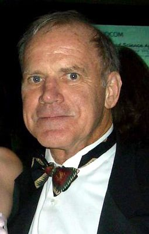
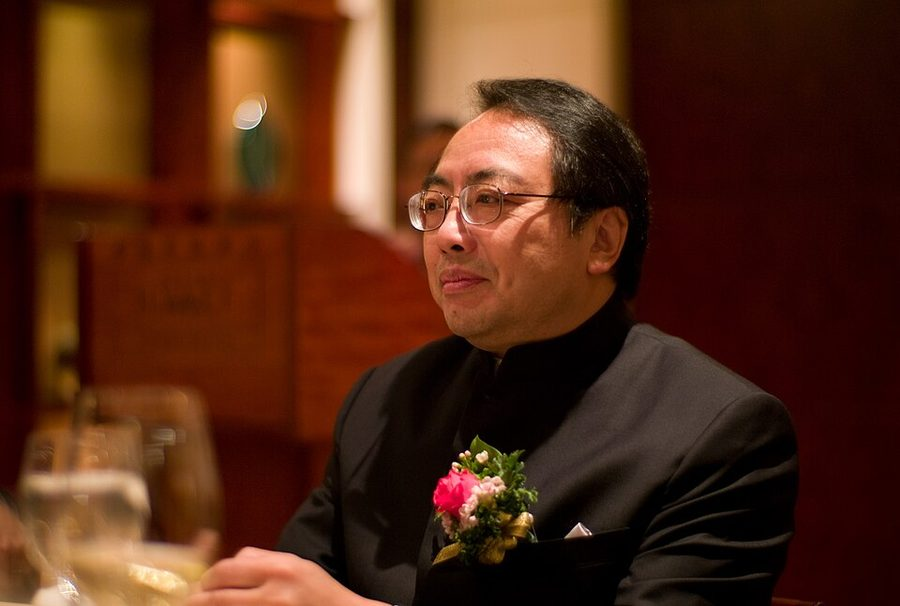
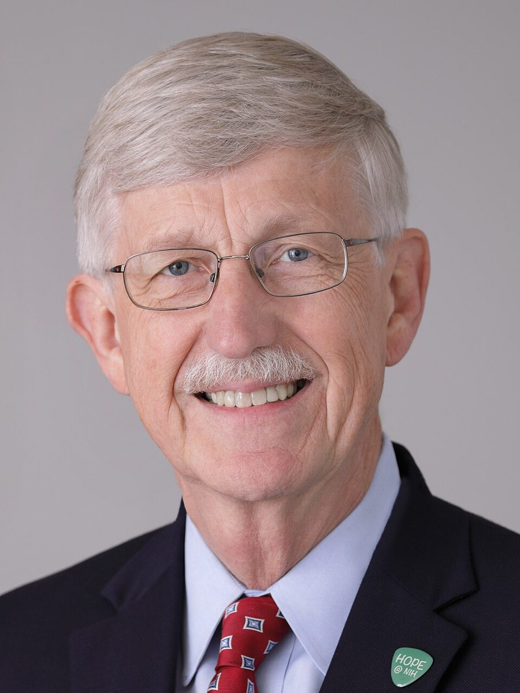

Las personas detrás de la genética
Médicos, genetistas, bioquímicos y biólogos que hicieron avanzar la genética, de Mendel a CRISPR: qué descubrieron, cómo y por qué importa hoy.
 011822–1884
011822–1884Gregor Mendel
El fraile agustino que, cruzando guisantes en un huerto de Brno, descubrió las reglas con que se heredan los rasgos. Nadie le entendió en vida.
Leer → 021844–1895
021844–1895Friedrich Miescher
El joven médico suizo que en 1869 aisló por primera vez el ADN, a partir del pus de vendas quirúrgicas. Lo llamó «nucleína».
Leer → 031848–1935
031848–1935Hugo de Vries
El botánico neerlandés que redescubrió las leyes de Mendel en 1900 e introdujo la palabra "mutación" en la biología.
Leer → 041857–1936
041857–1936Archibald Garrod
El médico londinense que vio en la orina negra de la alcaptonuria la primera enfermedad mendeliana humana y acuñó la expresión «errores congénitos del metabolismo».
Leer → 051866–1945
051866–1945Thomas Hunt Morgan
Desconfiaba de Mendel hasta que una mosca de ojos blancos le convenció. Su «cuarto de las moscas» demostró que los genes están en los cromosomas.
Leer → 061902–1992
061902–1992Barbara McClintock
Mirando cromosomas de maíz al microscopio descubrió que algunos genes «saltan» de sitio. Tardaron treinta años en creerla; luego le dieron el Nobel en solitario.
Leer → 071877–1955
071877–1955Oswald Avery
Buscaba mejorar el tratamiento de la neumonía y acabó demostrando, en 1944, que los genes están hechos de ADN. Nunca recibió el Nobel.
Leer → 081901–1994
081901–1994Linus Pauling
El químico que demostró en 1949 que la anemia falciforme se debe a una hemoglobina anómala. Inventó el concepto de «enfermedad molecular».
Leer →091905–2002Erwin Chargaff
Midió con paciencia las cuatro bases del ADN de muchas especies y encontró dos reglas que fueron la pista clave para la doble hélice.
Leer → 101920–1958
101920–1958Rosalind Franklin
Cristalógrafa de rayos X cuyas imágenes y medidas del ADN, incluida la Fotografía 51, fueron decisivas para descubrir la doble hélice. Murió a los 37 años.
Leer → 111916–2004
111916–2004Maurice Wilkins
El físico neozelandés que obtuvo las primeras imágenes de rayos X del ADN y compartió el Nobel de 1962. El «tercer hombre» de la doble hélice.
Leer → 121928–2025
121928–2025James Watson
Codescubridor de la doble hélice en 1953, primer director del Proyecto Genoma Humano y figura polémica por sus declaraciones racistas.
Leer → 131916–2004
131916–2004Francis Crick
El físico reconvertido en biólogo que, además de la doble hélice, formuló el «dogma central» y ayudó a descifrar cómo se lee el código genético.
Leer → 141905–1993
141905–1993Severo Ochoa
El bioquímico asturiano que sintetizó ARN en el laboratorio por primera vez. Su enzima permitió fabricar los mensajes artificiales con que se descifró el código genético.
Leer →151925–2022Marthe Gautier
La médica francesa que en 1958 contó 47 cromosomas en niños con síndrome de Down. Durante medio siglo el mérito se atribuyó a otro.
Leer →161926–1994Jérôme Lejeune
El pediatra francés que firmó en 1959 el descubrimiento de la trisomía 21, la causa del síndrome de Down. Un hallazgo en el que fue clave Marthe Gautier.
Leer →171925–2014Mary Lyon
La genetista británica que descubrió que en las mujeres uno de los dos cromosomas X se apaga al azar en cada célula. La "lionización" explica el pelaje de las gatas carey y muchas enfermedades.
Leer → 181927–2010
181927–2010Marshall Nirenberg
Un investigador joven y casi desconocido de los NIH que en 1961 leyó la primera «palabra» del código genético con un tubo de ensayo y un ARN hecho solo de uracilo.
Leer → 191922–2011
191922–2011Har Gobind Khorana
El químico indio que fabricó en el laboratorio fragmentos de ARN con secuencias conocidas para descifrar el código genético, y que sintetizó el primer gen artificial.
Leer →201916–1995Robert Guthrie
El microbiólogo y pediatra que inventó la prueba del talón. Gracias a su gota de sangre en papel, millones de bebés con fenilcetonuria han crecido sanos.
Leer → 211921–2008
211921–2008Victor McKusick
El internista de Baltimore considerado padre de la genética médica. Creó el catálogo de enfermedades hereditarias que hoy consultan todos los genetistas del mundo: OMIM.
Leer → 221926–2023
221926–2023Paul Berg
Unió en 1972 ADN de dos organismos distintos y abrió la era de la ingeniería genética. Después pidió una pausa para pensar en los riesgos.
Leer → 231918–2013
231918–2013Frederick Sanger
El único científico con dos Nobel de Química. Enseñó a leer las proteínas y luego el ADN; su método de secuenciación descifró el primer genoma humano.
Leer → 241938–2019
241938–2019Margarita Salas
Discípula de Severo Ochoa y pionera de la biología molecular en España. Su ADN polimerasa del virus phi29 se usa en laboratorios de todo el mundo.
Leer →
251944–2019Kary Mullis
Una noche de 1983, conduciendo por California, imaginó cómo copiar un trozo de ADN miles de millones de veces. Así nació la PCR.
Leer → 261950–
261950–Alec Jeffreys
El genetista de Leicester que en 1984 vio por casualidad que el ADN puede identificar a una persona. Inventó la huella genética.
Leer →271955–Ángel Carracedo
El médico gallego que convirtió Santiago de Compostela en un referente mundial de la genética forense y de la genómica de poblaciones. Ha ayudado a identificar víctimas de catástrofes y desaparecidos.
Leer → 281945–
281945–Nancy Wexler
Su madre murió de la enfermedad de Huntington. Ella organizó la búsqueda del gen, que pasó por las aldeas del lago de Maracaibo, en Venezuela.
Leer →
291950–Lap-Chee Tsui
El genetista que en 1989, en Toronto, encontró el gen de la fibrosis quística, uno de los primeros genes de enfermedad hallados sin saber qué proteína buscaban.
Leer → 301946–
301946–Mary-Claire King
Demostró en 1990 que existe un gen que predispone al cáncer de mama hereditario, BRCA1. También usó el ADN para devolver su identidad a los niños robados en Argentina.
Leer →
311950–Francis Collins
Médico genetista que codescubrió los genes de la fibrosis quística y la neurofibromatosis y dirigió el Proyecto Genoma Humano hasta su culminación en 2003.
Leer → 321946–2026
321946–2026Craig Venter
El científico empresario que retó al proyecto público del genoma humano con una técnica más rápida y que creó la primera célula con un genoma sintético.
Leer →331955–Katalin Karikó
La bioquímica húngara que dedicó décadas, sin apenas financiación, a convertir el ARN mensajero en un medicamento. Su hallazgo con Drew Weissman hizo posibles las vacunas de ARN contra la covid-19.
Leer → 341963–
341963–Francisco Mojica
Estudiando microbios de las salinas de Santa Pola, este microbiólogo de Alicante descubrió las secuencias CRISPR, les puso nombre y fue el primero en intuir que eran un sistema inmunitario.
Leer → 351968–
351968–Emmanuelle Charpentier
Microbióloga francesa que descubrió una pieza clave del sistema CRISPR de las bacterias y, con Jennifer Doudna, lo convirtió en unas tijeras para editar genes.
Leer → 361964–
361964–Jennifer Doudna
Bioquímica de Berkeley experta en la forma de las moléculas de ARN. Con Emmanuelle Charpentier convirtió CRISPR-Cas9 en una herramienta para editar genes.
Leer → 371981–
371981–Feng Zhang
El bioingeniero que adaptó CRISPR para editar genes en células humanas en 2013, y que después desarrolló herramientas para editar ARN y detectar virus.
Leer →381955–Svante Pääbo
El fundador de la paleogenómica. Secuenció el genoma de los neandertales, descubrió a los denisovanos y demostró que llevamos su ADN.
Leer →